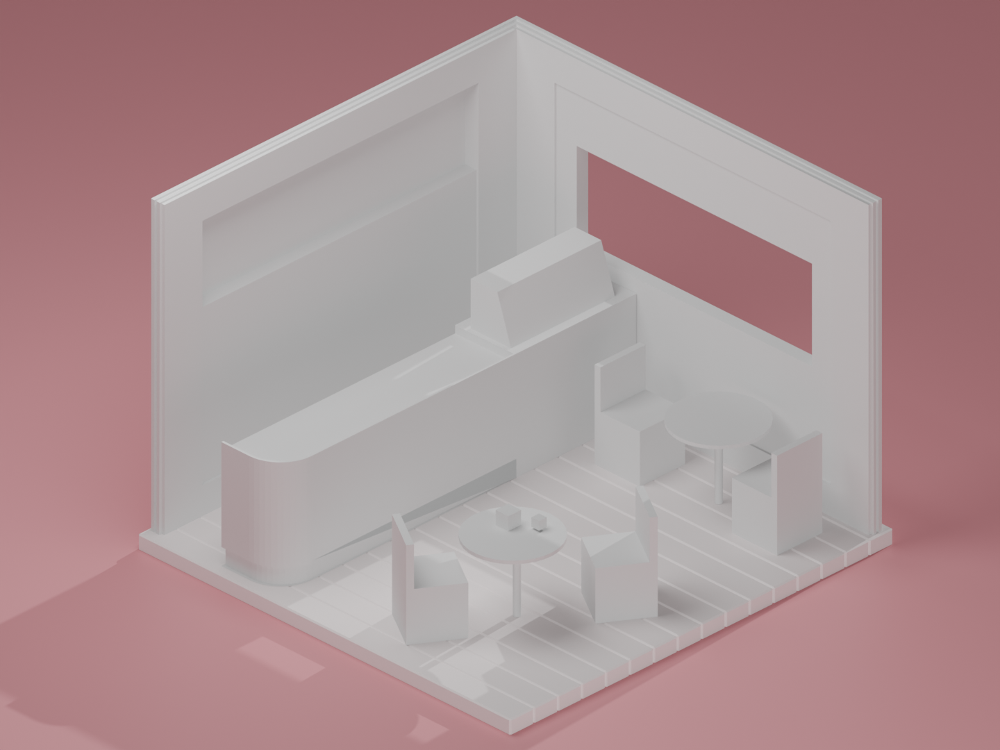
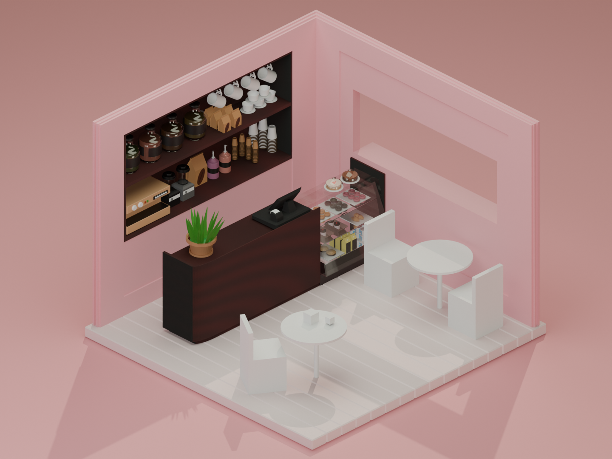
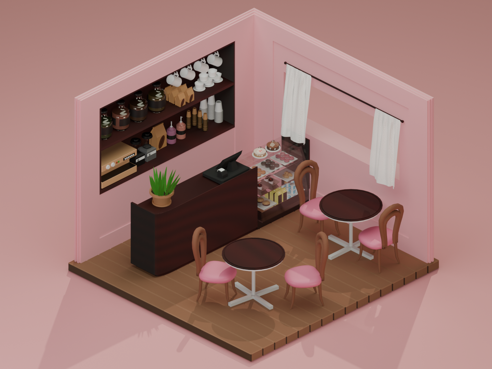
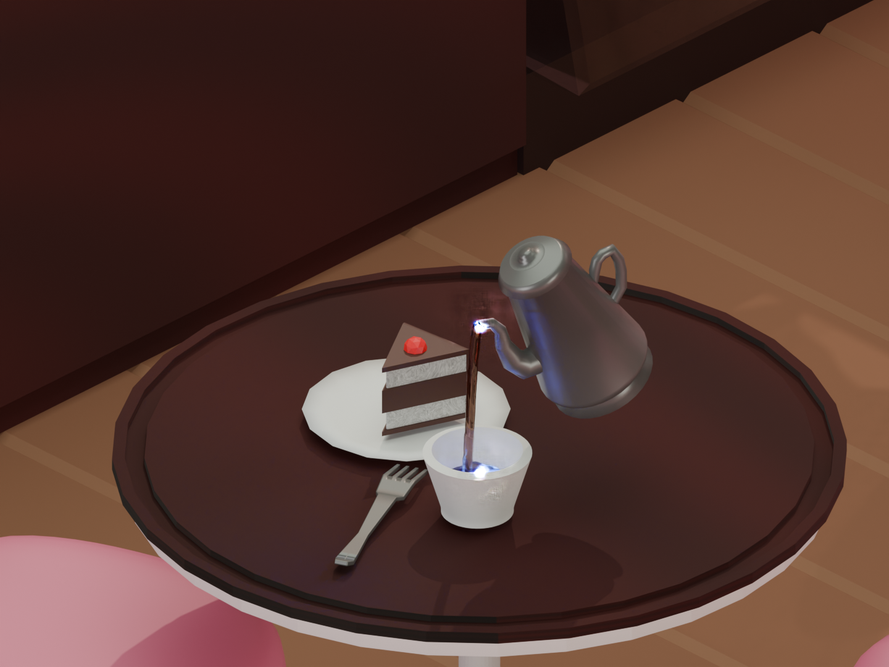
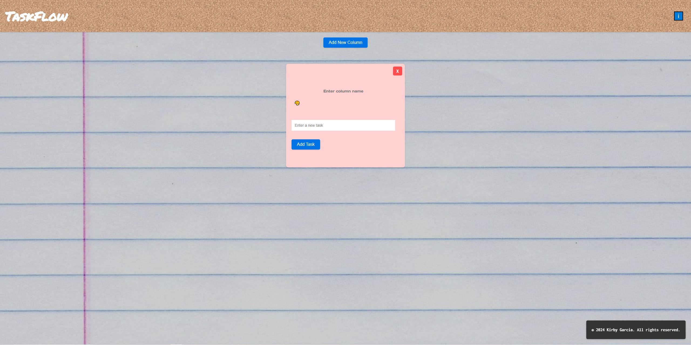
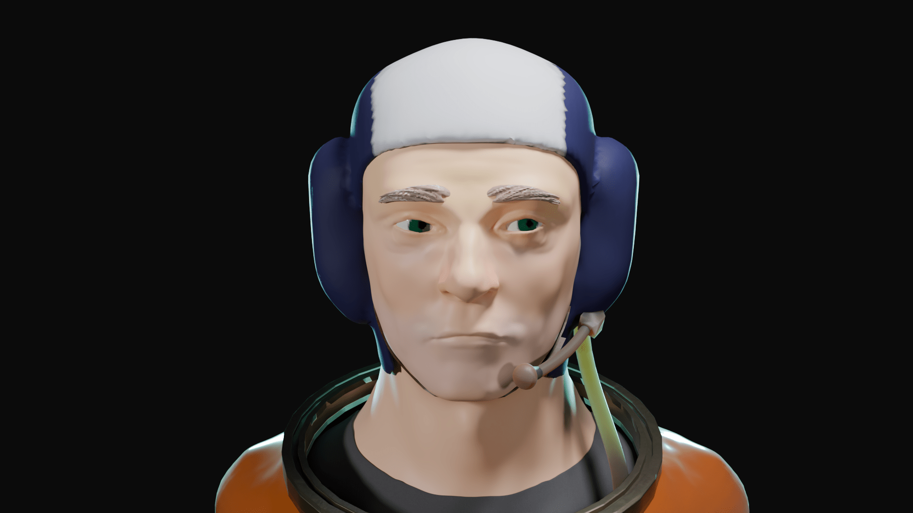

Cafe Animation
A cafe animation made in Blender. I had created all the objects and most textures, then animated the scene. The challenges were the liquid and wind physics, as well as lighting the scene. Once I had exported the video, I brought it into Adobe Premiere and added sound effects and music. Created using Blender and Adobe Premiere.
Project Details:
- Date: November 2024
- Role: Designer, Modeller, Animator, and Editor




See more >

